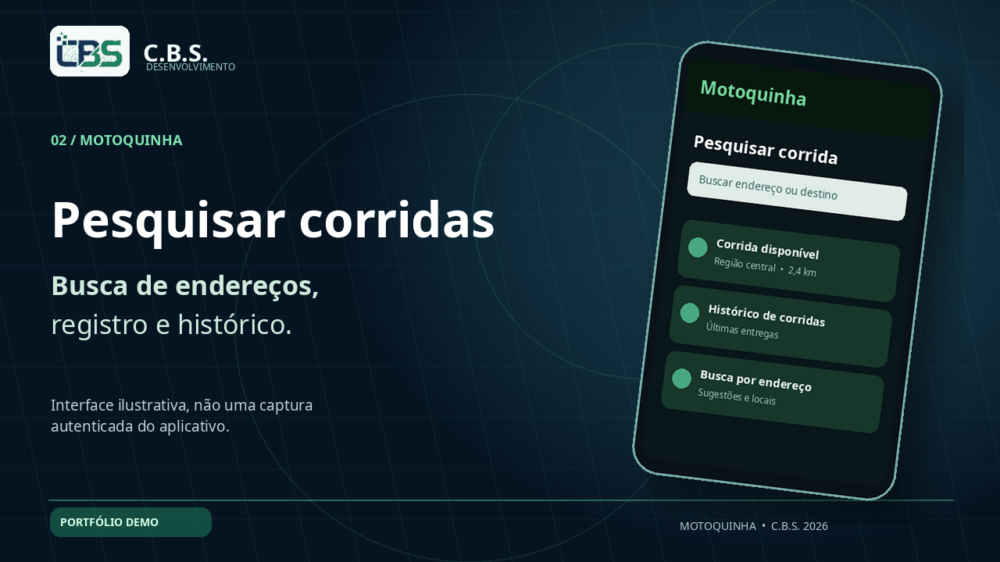
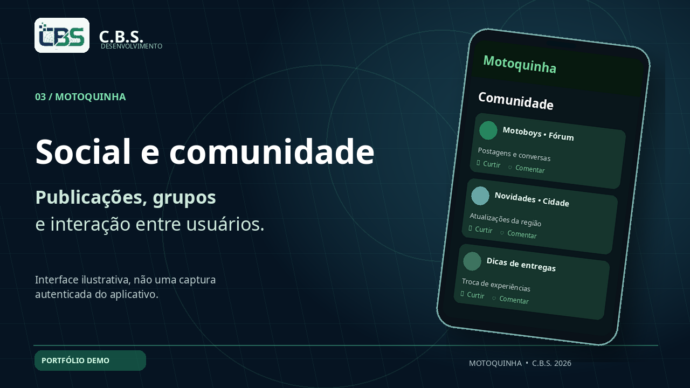
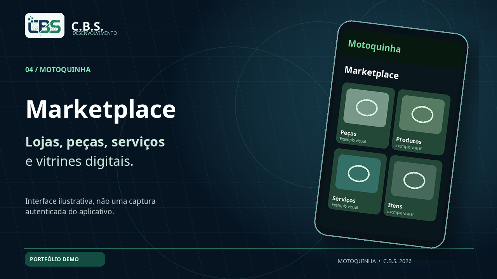

Corridas e endereços
Busca de endereço, registro de entregas e consulta de histórico — recursos apresentados como proposta funcional e interface conceitual.
Apresentação do aplicativo Motoquinha, desenvolvido pela C.B.S. Desenvolvimento. A navegação do vídeo ilustra recursos do projeto e não representa uma homologação completa da versão de produção.
Animação programada com tipografia, efeitos de profundidade e visual de produto. Mostra busca de corridas, Social, Marketplace e outros serviços do estúdio.
Mais vídeos da C.B.S. ↗Vídeo demonstrativo de código, cerca de 31,5 s. Inclui imagens conceituais claramente sinalizadas.
Recursos do produto em desenvolvimento, sem alegar aprovação ou implantação comercial inexistente.

Busca de endereço, registro de entregas e consulta de histórico — recursos apresentados como proposta funcional e interface conceitual.

Publicações, interação entre motoboys e grupos. Imagem de conceito; a versão funcional depende do app instalado.

Vitrine de peças, serviços e produtos para lojas/oficinas; material visual demonstrativo, sem compras reais nesta página.
Imagem produzida diretamente no Motoquinha V3 QA, sem usuário autenticado. Não usamos dados privados, nem apresentamos protótipos como screenshots de produção.